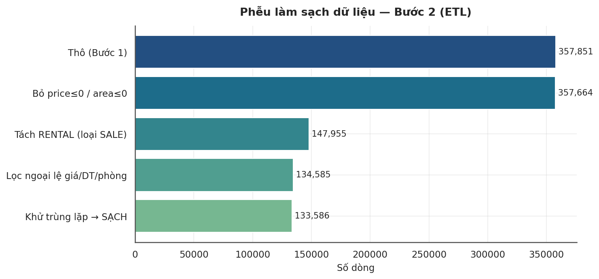
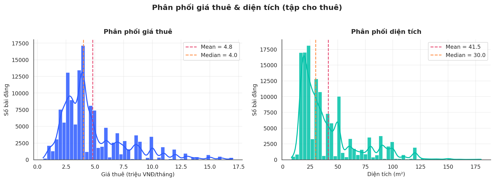

Thị trường cho thuê phòng trọ/căn hộ tại Việt Nam thiếu một công cụ tham chiếu giá khách quan. Nhóm xây dựng mô hình
hồi quy có giám sát dự báo giá thuê (triệu VNĐ/tháng) của một tin đăng.
Đầu vào: diện tích, số phòng ngủ, số phòng tắm, khu vực (thành phố, quận/huyện) và 12 cờ tiện ích nhị phân
(nội thất, gác, máy lạnh, máy giặt, thang máy, không chung chủ, bảo vệ 24/24, hầm để xe, ...).
Đầu ra: giá thuê price. Độ đo: MAE, RMSE (triệu VNĐ) và R²; mô hình được chọn theo RMSE trên tập Validation.
Không có bộ dữ liệu cho thuê đa nguồn sẵn có, nên nhóm tự thu thập (web scraping) và tổng hợp từ 10 nguồn:
5 trang tin đăng (chothuephongtro, nhatot, chothuenhadattoanvn, phongtro123, lozido), nhóm Facebook và 4 bộ dữ liệu công khai
trên GitHub (Hà Nội, TP.HCM, Đà Nẵng, Housing) — tổng cộng 357.851 bản ghi thô với định dạng khác nhau.
Các nguồn được hợp nhất về một lược đồ chung: price, area, bedrooms, bathrooms, full_address, posted_date, source
và 12 cờ feature_*.

| Nguồn | Số bản ghi | Tỷ lệ |
|---|---|---|
| chothuephongtro | 95.086 | 71,2% |
| nhatot | 9.920 | 7,4% |
| chothuenhadattoanvn | 9.866 | 7,4% |
| github (hcm/hn/dn/housing) | 13.966 | 10,5% |
| phongtro123 / lozido / facebook | 4.748 | 3,6% |
| Tổng sau làm sạch | 133.586 | 100% |
price ≤ 0 hoặc area ≤ 0 (tin “giá thỏa thuận”) → 357.664.price 0,5–17 triệu, area 8–180 m², số phòng hợp lệ
(dữ liệu thô có giá tới 10 tỷ/tháng, diện tích 1.000 m²) → 134.585.| Vấn đề | Phát hiện | Xử lý |
|---|---|---|
| Giá trị thiếu | detail_link 96,4%, description 80,4%, district 2,2% |
Bỏ 2 cột thiếu nhiều; quận thiếu gán nhãn “(không rõ)”. |
| Ngày đăng sai | 46% posted_date mang ngày ở tương lai (giá trị mặc định của web) |
Không dùng posted_date làm đặc trưng. |
| Mất cân bằng nguồn | chothuephongtro chiếm 71,2%; Hà Nội chiếm 88,0% bản ghi | Ghi nhận là giới hạn; cuối kỳ đánh giá sai số theo từng thành phố. |
| Tiện ích thiếu không ngẫu nhiên (MNAR) | Mỗi nguồn chỉ ghi nhận một phần tiện ích (0–11/12 cờ); giá trị 0 có thể là “không có” hoặc “không ghi”. Gây nghịch lý Simpson: toàn cục, có máy lạnh lại rẻ hơn 0,73 tr (do nguồn giá cao nhatot ít ghi tiện ích). | Đánh dấu cờ không quan sát được của từng nguồn là thiếu; loại source khỏi đặc trưng
vì là artifact thu thập, không phải yếu tố định giá. |
Tách city và district từ địa chỉ tự do (353 quận/huyện); One-Hot cho khu vực, gộp hạng mục hiếm
(< 10 mẫu) để tránh đặc trưng quá thưa → 80 chiều đặc trưng; chuẩn hóa Z-score cho biến số. Toàn bộ được đóng gói trong
sklearn Pipeline (fit chỉ trên tập Train để tránh rò rỉ dữ liệu). Giá thuê lệch phải (trung bình 4,80 tr, trung vị 4,0 tr,
skew = 1,55). Dữ liệu chia Train / Validation / Test = 70/15/15 (93.563 / 19.985 / 20.038 bản ghi).

Ở giai đoạn này nhóm thử các phương pháp cơ bản: 3 mô hình tuyến tính (OLS; Ridge, LASSO chọn alpha bằng
GridSearchCV trên Train) và Random Forest (RandomizedSearchCV) làm mốc phi tuyến. Random Forest được ràng buộc đơn điệu trên
12 cờ tiện ích (bật tiện ích không làm giảm giá) để không học tương quan âm giả do MNAR. Mô hình được huấn luyện trên Train,
chọn siêu tham số theo Validation, rồi đánh giá trên Test.
| Mô hình | Siêu tham số | Validation | Test | ||||
|---|---|---|---|---|---|---|---|
| MAE | RMSE | R² | MAE | RMSE | R² | ||
| OLS | — | 1,963 | 2,586 | 0,195 | 1,958 | 2,586 | 0,190 |
| Ridge | alpha = 1,0 | 1,963 | 2,586 | 0,195 | 1,958 | 2,586 | 0,190 |
| LASSO | alpha = 0,001 | 1,966 | 2,590 | 0,192 | 1,961 | 2,589 | 0,188 |
| Random Forest | 500 cây, depth 20, min_split 10 | 1,397 | 2,149 | 0,444 | 1,380 | 2,114 | 0,459 |
Kiểm chứng các bước xử lý dữ liệu (OLS, RMSE trên Validation):
| Cấu hình dữ liệu | RMSE | Kết luận |
|---|---|---|
| Thô — không tách khu vực từ địa chỉ | 2,681 | Mốc so sánh |
Tách city/district + One-Hot | 2,586 | Giảm 3,5% → giữ lại |
| + PCA (giữ 95% phương sai) | 2,622 | Mất thông tin khu vực → không dùng |
+ Biến đổi log1p(price) | 2,636 | RMSE tăng, dự báo thấp phân khúc giá cao → giữ giá gốc |
Nhận xét.
Mã nguồn: github.com/chuotchuilacduong/Machine_Learning_20261
— làm sạch: notebooks/02_data_cleaning.ipynb; khám phá dữ liệu: notebooks/03_eda.ipynb;
huấn luyện: notebooks/04_modeling.ipynb; tiền xử lý đặc trưng dùng chung: script/model/features.py.
district.district thay cho One-Hot, có dropout và early stopping.